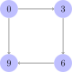

Prerequisites
The basics of graphs
A graph consists of at least two components. The first is the set of nodes. When talking about graphs, every node is usually called a vertex, so instead of the graph’s set of nodes we talk about the graph’s set \(V\) of vertices. In addition, there is an edge relation \(E \subseteq V \times V\) that connects vertices to each other. When drawing graphs, the edges in \(E\) are represented by arrows.
The graph depicted below has \(\left \{ 0,1,2,\ldots,11 \right \}\) as its set of vertices, and \(E\) consists of the following tuples:
- \(\left \langle 0,3 \right \rangle\)
- \(\left \langle 0,6 \right \rangle\)
- \(\left \langle 0,9 \right \rangle\)
- \(\left \langle 3,0 \right \rangle\)
- \(\left \langle 3,6 \right \rangle\)
- \(\left \langle 3,9 \right \rangle\)
- \(\left \langle 6,0 \right \rangle\)
- \(\left \langle 6,3 \right \rangle\)
- \(\left \langle 6,9 \right \rangle\)
- \(\left \langle 9,0 \right \rangle\)
- \(\left \langle 9,3 \right \rangle\)
- \(\left \langle 9,6 \right \rangle\)
- \(\left \langle 1,4 \right \rangle\)
- \(\left \langle 1,7 \right \rangle\)
- \(\left \langle 1,10 \right \rangle\)
- \(\left \langle 4,1 \right \rangle\)
- \(\left \langle 4,7 \right \rangle\)
- \(\left \langle 4,10 \right \rangle\)
- and so on

By default, we take the edges of a graph to be directed: \(a E b\) does not imply \(b E a\). This is why we depicted edges with arrows. You may think of them as a one-way roads.
In the special case where \(E\) is symmetric, we call the graph undirected. It is customary to draw undirected graphs with undirected edges rather than separate arrows in both directions. Since the edge relation in our example graph is symmetric, we can draw it in a much simpler fashion using undirected edges.

If the edge relation is transitive, it is also customary not to draw any edges that can be inferred by transitivity. This convention further simplifies how we depict our example graph.
But keep in mind that these three pictures all define the same graph, we are merely using various notational conventions to remove clutter from our pictures. Mathematically, how we draw graphs has nothing to do with their definition.
A graph is a pair \(\left \langle V, E \right \rangle\) where \(V\) is a set of vertices and \(E \subseteq V \times V\) is the edge relation.
Note that the definition above treats undirected graphs as the special case of directed graphs where \(E\) is symmetric. Some authors instead assume that graphs are undirected by default and use the term digraph to refer to a directed graph. Either one is fine, of course, but for linguistics directed graphs are usually more important than undirected ones, which is why we will continue to treat undirected graphs as a special case of directed graphs.
For each on the hierarchies listed below, define its corresponding graph.
- the person hierarchy
- the person-person hierarchy used for the PCC
- the case hierarchy for noun stem allmorphy
Each edge you posit should correspond to a line in the figure for the relevant hierarchy.
Paths and Reachability
One of the central notions for graphs is reachability. A vertex \(a\) is reachable from vertex \(b\) iff we can follow a sequence of edges from \(a\) to \(b\). This sequence is called a path.
Consider one more the following graph, and assume that the edge relation contains a pair \(\left \langle a,b \right \rangle\) iff there is a line from \(a\) to \(b\) in the picture:
Here \(3\) is reachable from \(0\) because there is an edge taking us from \(0\) to \(3\). But \(6\) is also reachable from \(0\) as we can first move to \(3\) and from there \(6\). The path from \(0\) to \(6\) can be written as \(\left \langle 0,3,6 \right \rangle\).
On the other hand, \(1\) is not reachable from \(0\). No matter which sequence of edges we take from \(1\), there is no way to ever get to \(0\).
A path through a graph \(\left \langle V, E \right \rangle\) is a sequence \(\left \langle v_1, \ldots, v_n \right \rangle\) (\(n \geq 2\)) such that \(\left \langle v_i, v_{i+1} \right \rangle \in E\) for all \(1 \leq i < n\). For all \(a, b \in V\), we say that \(b\) is reachable from \(a\) iff there is a path \(\left \langle v_1, \ldots, v_n \right \rangle\) with \(v_1 = a\) and \(v_n = b\).
As always in mathematics, there are multiple ways of saying the same thing, and the same is true for reachability. A node \(b\) is reachable from \(a\) in graph \(\left \langle V, E \right \rangle\) iff \(\left \langle a,b \right \rangle\) is member of the transitive closure of \(E\). The transitive closure of \(E\) is the smallest \(E'\) with \(E \subseteq E' \subseteq V \times V\) such that \(E'\) is transitive.
Consider the graph below.

Its edge relation \(E\) consists of the pairs \(\left \langle 0,3 \right \rangle\), \(\left \langle 0,9 \right \rangle\), \(\left \langle 3,6 \right \rangle\). The transitive closure \(E'\) of \(E\) also contains \(\left \langle 0,6 \right \rangle\). This is the smallest superset of \(E\) that is transitive. The transitive closure of \(E'\) is \(E'\) itself — since \(E'\) is already transitive, nothing needs to be added. The symmetric closure \(E''\) of \(E'\) must also contain \(\left \langle 3,0 \right \rangle\), \(\left \langle 9,0 \right \rangle\), and \(\left \langle 6,3 \right \rangle\). Now if we take the transitive closure of \(E''\), every node is connected to every node, so the edge relation is identical to \(V \times V\). Thus the transitive, symmetric closure of \(E\) is \(V \times V\) because there is no smaller extension of \(E\) that is both symmetric and transitive.
Connectedness of graphs
Graphs can have varying degrees of connectivity. Connectedness measures the degree to which every node in the graph is reachable from some other graph.
A disconnected graph is one where there are nodes \(a\) and \(b\) such that even if one ignores the direction of the edge relation, one cannot get from \(a\) to \(b\). So if we were to construct the graph in the real world as a kind of mobile, we would not be able to hang the graph on the wall with a single hook because not all parts hang together — at least one part would fall to the ground.
A weakly connected graph is such that it forms one cohesive whole via the edge relation, but there might be nodes \(u\) and \(v\) such that neither one can be reached from the other unless one ignores the direction of edges. A connected graph satisfies the strong property that for all nodes \(u\) and \(v\), \(u\) is reachable from \(v\) or the other way round. A strongly connected graph, finally, is such that every node is reachable from every node.
A directed graph is
- weakly connected iff the reflexive, symmetric, transitive closure of its edge relation is total,
- connected iff the reflexive, transitive closure of its edge relation is total,
- strongly connected iff the reflexive, transitive closure of its edge relation is identical to \(V \times V\),
- disconnected iff it is not weakly connected.
The undirected graph we saw at the beginning of the previous unit is disconnected, and the same goes for any directed version of it. For example, there is no edge between \(1\) and \(3\), one simply cannot be reached from the other.
However, we can identify parts of the graph that are connected.

Even though there is no edge between \(0\) and \(6\), the transitive closure of the edge relation does connect the two.
Now let us look at a directed graph, where multiple degrees of connectedness need to be distinguished.

The directed graph above is strongly connected. When we take the reflexive, transitive closure of the edge relation, every node is reachable from every node. This is exactly what it means to be strongly connected.
But a slight change in the edge relation suffices to reduce strong connectedness to connectedness.

Even if we look at the reflexive, transitive closure of the edge relation, there is no path from \(3\) to \(0\), from \(6\) to \(0\), or from \(9\) to \(0\). So we can no longer reach every node from every node. But for any two nodes \(a\) and \(b\), it still holds that \(a\) can be reached from \(b\) or \(b\) can be reached from \(a\). Hence the reflexive, transitive closure of the edge relation is still total, and we have a connected graph.
Finally, consider what happens if we remove one edge from the graph above.
Now even the reflexive, transitive closure of the edge relation does not connect \(6\) and \(9\), so the graph cannot be connected. However, \(6\) and \(9\) are still reachable from each other if we consider the reflexive, symmetric, transitive closure of the edge relation. Therefore, the graph is weakly connected.
Intuitively, the three degrees of connectivity can be described in terms of how we have to move along the arrows in a graph to read one node from another one:
- If we can reach every node from every node by following a sequence of arrows, the graph is strongly connected.
- If we can reach \(a\) from \(b\) by following a sequence of arrows, but not necessarily \(b\) from \(a\), the graph is connected.
- If we have to sometimes go against the direction of the arrow to get from \(a\) to \(b\), the graph is weakly connected.
Is every strongly connected graph weakly connected? Justify your answer.
Suppose that a graph \(G\) is weakly connected. Is it guaranteed to be connected if we take the reflexive, symmetric, transitive closure of the edge relation?